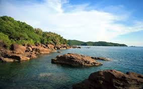

Hòn đảo này còn được mệnh danh là Đảo Ngọc, là hòn đảo lớn nhất Việt Nam, cũng là đảo lớn nhất trong quần thể 22 đảo tại vùng vịnh Thái Lan. Đảo Phú Quốc cùng với các đảo khác tạo thành huyện đảo Phú Quốc trực thuộc tỉnh Kiên Giang. Toàn bộ huyện đảo có tổng diện tích 589,23 km vuông.
Năm 2008, trang web Concierge.com (chuyên về du lịch tại Úc) đã công bố Bãi Dài Phú Quốc là 1 trong 13 bãi biển “hoang sơ và đẹp nhất” thế giới. Ngoài ra Phú Quốc còn là nơi sản xuất ra một loại nước mắm không chỉ nổi tiếng tại Việt Nam mà còn được khắp thế giới biết đến.
